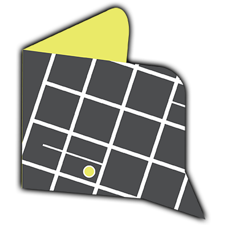

The Stacks
LEAVE YOUR
MARK
ON THE MAP
Your favorite place in Austin
----------------
Tu lugar favorito en Austin
I want this to be better
----------------
Quiero que esto sea mejor
Tell us About Your City
----------------
Muéstranos tu ciudad

Return
Home